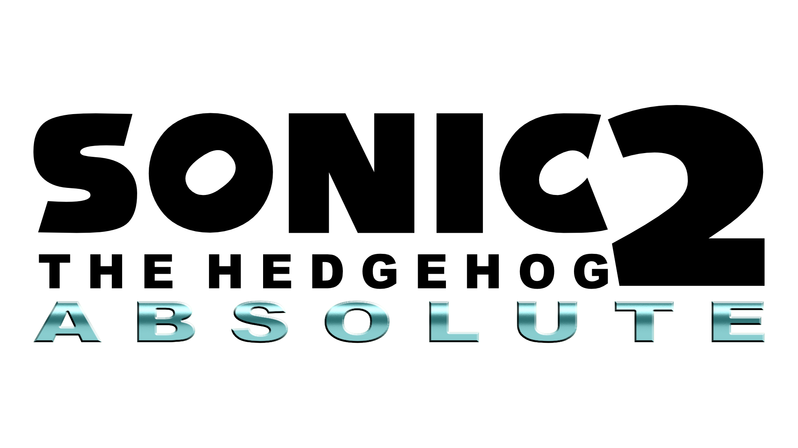

Patch Notes Archive
Release 1.2.2
Player 2 will no longer use Player 1's physics values
A missing frame from Tails' tails has been restored
The game now uses Discord Rich Presence
Some art has been reworked to remove "Mania" styled elements
Tails and Knuckles' underwater palettes have been reworked
Dying during the Oil Ocean Zone boss and restarting the level will no longer break the background scrolling
The signpost used to end Chemical Plant Zone act 2 in time attack mode has been moved
The tile art in Hill Top Zone has had effects applied to it to reduce layering oddities
Player 2s spindash now matches the spindash setting in the gameplay menu
Tails' default max dash animation has been set to his animation in Sonic 2
When Tails is in the rolling/jumping animation, his tails position is locked to 45° increments unless Mania rotation is activated
Player 2 can now be controlled with a second controller connected to the device
Release 1.2.1
General Tweaks
The Debug Mode HUD display has been expanded
Bug Fixes
Characters can no longer get beyond signposts in certain time attack levels
Chaos Emeralds are now reset to zero when entering Gamble Scramble
Knuckles can no longer softlock the ending by attaching himself to a wall
Tails will now correctly follow Sonic through Metropolis Zone's vertical level wraps
Pausing has been reworked in the back-end to prevent weird frame-perfect bugs and allow more flexibility in the design
The pause menu now slides away on the screen instead of vanishing
The engine will now refresh the global palette on levels that aren’t in the ‘Regular’ list
The HUD in Arcade Mode now correctly reflects the time limit
Release 1.2.0
New and Updated Features!
Gamble Scramble is now available in the Extras menu! Collect 1000 rings in Casino Night 2 before time runs out. Watch out, there might be some extra obstacles…
Music from Sonic 3 and Sonic & Knuckles is now available for super forms in the Options menu
Spring animations can now be toggled between Sonic 1, Sonic CD and Sonic 2
The options menu has been organized into sections
A new Graphics Mode toggle has been added to Options menu, allowing you to choose between Hardware, Emulated or Mobile colours
Music and SFX volume can now be changed in the Options menu
The aspect ratio of the game screen can now be changed in the Options menu
A new random monitor toggle has been added to the Options menu
VSync can be turned on and off in the Options menu
Scaling Mode can now be selected in the Options menu. Choose between Nearest, Integer, Sharp Bilinear or Bilinear
Max dash animations can now be varied between different characters.
The time attack menu has been overhauled
The game can now be played at 50 frames per second
Quality of Life Improvements
Fadeouts on level completion have been made faster
The drop dash now produces unique dust sprites
‘ACT’ text has been added to the title card
The HUD position has been adjusted to match the original game more closely
The Level Select menu is now center-aligned
The continue screen has been tweaked to be more in line with Sonic 1 (1991)
Tails has been given a unique drowning animation
A button prompt will now appear in the top-right of the screen when a character is able to turn Super
Characters can now move while hanging on hang bars in Wing Fortress
The red spring at the start of Casino Night Act 2 has had its properties adjusted
Knuckles can now see and climb the walls in the final boss fight
An act results screen now appears in Wing Fortress Zone when playing Arcade Mode
The movement speed in Chemical Plant Zone’s tubes has been increased
Jumping form a vine or bar will now use the jumping/rolling animation
The directional buttons can now be held throughout the menus for continuous movement
The L and R buttons can now be used to quickly cycle through the Options menu sections
The Tornado will now always keep up with the player in Sky Chase
Chemical Plant and Oil Ocean’s backgrounds now have additional parallax scrolling
Characters can now spindash in the oil floods found in Oil Ocean
The Spiny and Grabber badniks now have additional SFX
General Tweaks
The engine has been updated
Sonic and Super Sonic’s sprites have been reworked
Knuckles’ sprites have been overhauled to be more like the original S3 sprites
An extra frame has been added to Knuckles’ glide & flume animations
Tails’ sprites have been updated to match his Sonic 1 Forever appearance
Emerald Hill’s graphics have been tweaked
The end-of-act signpost sprites have been reworked
The HUD graphics have been tweaked
The special stage HUD has been tweaked
Transparency issues on Wing Fortress’ cranes have been fixed
The title ribbon has been updated to match Sonic 1 Forever
Knuckles’ hat™ on the main menu has been reworked
Arcade Mode has a new icon
The graphic from a broken monitor is now always visible
The control test has been updated to use the S2 font
The unused special stage has been added to the level select
The animal sprites have been tweaked
Sonic’s pushing sprites are now closer to the Genesis original
Various ending sprites have been tweaked
Monitor icons have been tweaked
The life counter will no longer show if Infinite Lives is enabled
Extra Life monitors are now replaced with Ring monitors if Infinite Lives is enabled
Various Save Select SFX have been changed
Tails’ continue animation from the Sonic 2 2013 has been restored
A new copy of Emerald.wav has been provided in an attempt to prevent the game crashing when the player collects a Chaos Emerald
The wording on the dev menu has been changed
Gameplay Tweaks
Knuckles glide has been made more accurate to Sonic 3 and Knuckles
The Peelout has been made more accurate to Sonic CD
Tails' tails & Knuckles’ fists now deflect projectiles like in Sonic 3 and S1F
Characters are now invulnerable for 60 frames after being invincible or super
It is now possible to move left and right while falling in a spindash state
The collision behaviour of monitors has been changed
Bug Fixes
The DLLs for Microsoft Visual C++ Redistributable are now included
A section of Chemical Plant Zone has had its collision fixed
A bridge rotation bug has been fixed
Using the Insta Shield a few frames before getting an invincibility power-up will no longer remove the power-up
Super Sonic’s time attack record in Wing Fortress Zone will now be saved properly
Touch Controls have been removed from the Special Stages
HUD elements now use the correct palette indices
Knuckles' signpost continue icon sprites now use the correct palette indices
The drop dash has been tweaked
A pause bug at the beginning of Special Stages has been fixed
Sonic’s balancing animation has been fixed
Characters will no longer be prevented from ending a level in wider aspect ratios
The speed required to trigger Super Sonic’s max dash animation has been increased
The HUD is now capable of displaying seven digit scores
The rocket on the Tornado is now burning in the ending
Tails' helicopter SFX now restart properly after pausing
CD Drowning SFX now restart properly after pausing
A path swapper was fixed in Emerald Hill Zone Act 2
A path swapper was added in Aquatic Ruin Zone Act 1
The Arcade Mode results screen now appears when exiting an Arcade Mode run from a Special Stage
Various collision has been fixed in Chemical Plant and Wing Fortress
The water ripple sprite no longer gets cut off in wider aspect ratios
Tails can no longer break walls by walking when he is accompanying Knuckles
Tails’s AI will no longer constantly jump in certain situations
A Wing Fortress Zone tile has been changed to make a ring monitor accessible
Players can no longer end up on the wrong draw layer in Aquatic Ruin Zone act 2
Tails' tails will no longer appear twice during the CD Spring Twirl animation
Super Sonic's crouching hitbox now matches Sonic's
It is no longer possible to pause during the act results screen if the level has taken a minute or longer
The player score is now correctly wiped to zero after a game over
Characters can no longer launch into the sky after finishing an act
Music will no longer skip when both super forms and speed shoes try to speed up stage music at the same time
Release 1.1.1
Art Changes
The numbers used in the Ring Chain display have been tweaked
Bug Fixes
A superfluous function was removed from the player code
Knuckles + Tails paired games will now save as expected
Some tiles in the Emerald Hill Zone boss area have been moved to the right layer
The red TIME text will now appear on the HUD when there is less than a minute left
Knuckles is now properly credited for rings in Knuckles + Tails special stages
Release 1.1.0
New and Updated Features
Arcade Mode has been added to the game modes menu
Ring Chain has been implemented
Knuckles and Tails are now available to play as a pair
Quality of Life Improvements
Pressing jump will now always trigger a jump sound effect, even if collision with a ceiling prevents a jump
The birds in the ending are now always blue Flickies
Time Limit has been added to the options
Gameplay Tweaks
Knuckles' gliding behaviour has been made accurate to S3K
Art Changes
Some Tails sprites have been slightly reworked
The parachutes in Sky Chase Zone have been reworked
Robotnik has had some shading changes
Sonic's Time Attack portrait has been reworked
Knuckles now has sprint sprites
Global sprites (springs etc.) have been tweaked across the board
General Tweaks
The date for Team Forever on the title screen has been updated to 2022
Bug Fixes
The 'Early Bird Special' achievement will no longer be awarded when using level select
It is no longer possible to pause during the START message at the beginning of special stages on 1.3 exes
A plane switch object was added to ARZ1 to prevent glitching through a wall
Exiting the game from a special stage will now clear the level data that is saved when entering a special stage
Pausing code has been tweaked to work in 1.3 engine
Knuckles will no longer bug for a frame when gliding
A chunk in Hill Top Zone that included the bottom of an otherwise absent tree has been changed
Flower tiles in Emerald Hill Zone no longer appear over the player in inappropriate situations
A tile in Oil Ocean Zone has had an incorrect palette rotation removed from it
Some plane switches have been adjusted in Emerald Hill Zone act 1 to prevent collision bugs
The shading of a tile in Oil Ocean Zone has been changed
Release 1.0.2
Gameplay Tweaks
The doors in the exit of Death Egg Zone have been removed.
Art Fixes
A stray pixel has been fixed in the ending Tornado.
The Sega Sonic sprite has been tweaked.
The Slot Machine icons have been reworked.
Casino Night Zone's Eggman sprite has been tweaked.
The Chemical Plant Zone underwater palette has been tweaked.
Art fixes were applied to Chemical Plant Zone, Aquatic Ruin Zone, Hill Top Zone, and Metropolis Zone.
The water surface in Aquatic Ruin Zone has been recoloured.
Hill Top Zone has had a tiling fix applied.
Sonic Sprites have been tweaked.
Achievement Icons have been tweaked.
Eggman looks a lot better sitting in the cockpit in Wing Fortress Zone.
Bug Fixes
An error in Aquatic Ruin Zone collision has been fixed.
The Large Piston in MPZ no longer resets player score when touched from the bottom.
Loading a complete save now resets the score to zero.
Speed Caps should no longer be turned on randomly.
The cannons in Oil Ocean Zone should no longer launch players who are not in them.
Pressing start during the Wing Fortress Zone cutscene a second time will have no effect.
The remaining doors in Death Egg Zone will prevent players phasing through them.
It should no longer be possible to cancel Sonic's super form in the ending.
Finishing a game with Tails with all Emeralds should result in the proper ending.
A layering error in Aquatic Ruin Zone was fixed.
Objects in Metropolis Zone will no longer pop in unexpectedly.
Broken monitors and whisps now consistently appear above tiles in ARZ.
A springboard in Aquatic Ruin Zone was moved back five pixels.
Bosses will no longer reset the screen boundaries more than they need to.
Tails' flying hitbox has been repaired.
Lives and Continues are now capped at 99.
Release 1.0.1
The time display in time attack has had a coding error corrected
The continue screen will now work as intended
Some sprites in the ending have been tweaked
The button in Metropolis Zone can now be walked on
The blue blocks in Casino Night Zone now move on level cycles instead of screen cycles
The Superstar achievement has had its description reworded so it applies to other characters
Vertical plane switches now react to the direction the player is facing if they are not moving
The exe has been updated to prefent SFX cutting off
The boss in Metropolis Zone no longer grins when you hit it
Special Stage objects should no longer flash with the background at the end of Special Stage 7
Players can no longer cancel their super forms in the ending
The door noise in Mystic Cave Zone should no longer get stuck playing every frame
The Hill Top Zone boss can no longer be evaded by flying over it
Holding A B or C during the act results will now make the continue alert faster
The Large Pistons in Metropolis Zone are now as deadly as they are supposed to be
The Super Sonic sprite shown before the credits has been replaced with a different version
The Save Transfer and Control Test utilities are no longer missing
The Oil Ocean Zone boss can no longer be skipped
The Sonic sprite on the Sega screen has been tweaked
The panels in Wing Fortress Zone are no longer sticky
Release 1.0.0
Quality of Life Improvements
Sonic 2 Absolute is now available for download.